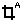
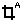

 The autocrop Automatically removes pixels with uniform low intensity values, such as a constant background value.
Image-based geometries are created using the Image Geometry Editor, which is accessible from both BioModel and MathModel workspaces. A geometry is created separately for each spatial application associated with a single model. For VCell to use images to create geometries, the image must be segmented so that different segments of the image can be mapped to the different structures defined in the model. The Image Geometry Editor can load either segmented or unsegmented images using the Bioformats Library, and for unsegmented images provides tools to crop and segment the image within VCell. (Note: The first time a VCell user makes use of the BioFormats library, a dialog will appear prompting the user to give a one time approval for downloading and installation of this software due to licensing issues.)
From within the "Geometry" view panel select the "Geometry Definition" tab.
Create a NEW image based geometry by clicking the "Add/Replace Geometry" button, choose "New..." and select from the list that appears:
COPY an image based geometry from a saved BioModel, MathModel or Geometry by selecting "Add/Replace Geometry" button, then choose "Open from..." and select from the list that appears:

Segmenting imported images
The segmentation process described below is depicted in the series of snapshots at the bottom of figure; these snapshots demonstrate, stage by stage, how an uploaded noisy image is transformed into a model geometry. In this example, two spatial compartments are represented by the two corresponding Regions of Interest (ROIs). The regions of the image that are occupied by a particular subdomain (volume structure) in the model are defined by "painting" the appropriate pixels of the images with a single highlighting color, and assigning those pixels to a specified "Domain Region". Each Domain Region is assigned a different color.
Begin the segmentation process using the "Add Domain..." button (see (B) in figure) to add an ROI name for each subdomain (compartment) in the final geometry. Enter an ROI name, and a color is assigned that will be used to paint changes onto the editing canvas when user actions occur.
 Crop an imported image to select the appropriate working area using the crop tool (D).
Crop an imported image to select the appropriate working area using the crop tool (D).

The autocrop Automatically removes pixels with uniform low intensity values, such as a constant background value.
 Adjust brightness to clearly display the image before defining ROIs.
Adjust brightness to clearly display the image before defining ROIs.
 Adjust magnification to clearly display the image before defining ROIs.
Adjust magnification to clearly display the image before defining ROIs.
 Adjust transpancy of the overlay (highlighting of pixels) using the Domain/Image slider (J) The slider shifts the view from only the current user-defined domains (slider to Domains side) to only the imported image (slider to Image side); a "mix" of the domains and Image is viewed with the slider between the extremes. The mix view allows the user to see how the user-defined domains line-up with the original imported image.
Adjust transpancy of the overlay (highlighting of pixels) using the Domain/Image slider (J) The slider shifts the view from only the current user-defined domains (slider to Domains side) to only the imported image (slider to Image side); a "mix" of the domains and Image is viewed with the slider between the extremes. The mix view allows the user to see how the user-defined domains line-up with the original imported image.
 Smooth images to reduce random intensity variations (noise), which otherwise might make thresholding of image intensities less effective. The smoothing slider tool applies a filter to the imported image that reduces random noise (E). If after smoothing the image retains sufficient clarity and definition, the histogram thresholding tool can be applied to select intensity values that will define the currently active ROI (F).
Smooth images to reduce random intensity variations (noise), which otherwise might make thresholding of image intensities less effective. The smoothing slider tool applies a filter to the imported image that reduces random noise (E). If after smoothing the image retains sufficient clarity and definition, the histogram thresholding tool can be applied to select intensity values that will define the currently active ROI (F).
Threshold images using the Histogram Tool (F). The histogram thresholding tool helps segment an imported image by grouping areas of an image on the basis of their pixel values. The bottom of the image geometry editing canvas displays a histogram of image intensities. Clicking or dragging the mouse horizontally across the histogram display selects a range of pixel values throughout an imported image, that, grouped together, define a portion corresponding to the currently active ROI. Histogram selections are highlighted in the editing canvas. Small sliders are provided to zoom and scroll within the histogram.
Apply or "paint" the highlighted pixels to the selected Domain Region by pressing the "Apply..." button. A popup window will asked whether you want to "Update" the current domain with the new pixel selections (any previously assigned pixels will be replaced) or to "Create" a new domain based on the histogram highlight. Each pixel in the image must be unambiguously assigned to a specific domain. If the pixels selected are already assigned to an existing domain, a popup window will ask if you want to "Overwrite" the existing domain region assignments for those pixel or "Keep" the previous domain region assignment for those pixels.
This tool is especially helpful when imported image files have multiple z-slices representing three-dimensional (3D) information. Manual segmentation of 3D images is tedious and difficult, given that only one z-slice can be viewed at a time. Thresholding of image values is usually effective because structurally related areas of the imported image have close pixel values since they are created similarly during the image generation process (e.g. microscope images from cells stained to enhance cytoplasm or nucleus).
Manual painting can be used to add(remove) pixels to a domain region, and can be used after after applying the histogram tool to "touch up" the region. Manual painting tools can also be used to create an irregular geometry de novo, i.e. without an imported image (G). Note that increasing or decreasing the image zoom will increase or decrease the resolution of the manual painting tools. Manual painting tools include:
 paintbrush
paintbrush
 fill
fill
 eraser
eraser
Review and edit the Domain Regions list. The "Domain Regions" list is automatically created as the geometry is edited (H). The list identifies the size of all contiguous domain regions that have so far been defined in the editing canvas and provides a clear view of the current editing state. This list helps to identify detect small discrepancies in ROI editing, which could lead to a fragmented or inappropriate final geometry. Clicking on one or more entries in the "Domain Regions" list will highlight the associated domain region pixels in the image canvas. Similarly, using the domain region pick tool (I) allows the user to select one or more regions in the image canvas (click/shift-click) that will also be highlighted in the "Domain Regions" list.
Merge domain regions with neighbor regions using the AutoMerge button. Thresholding and manual editing often leave regions in the editing canvas that are inappropriate; Such inappropriate regions can be selected and assigned to the same domain and the surrounding (neighboring) pixels. A neighbor is a domain region immediately adjacent to (touching) another domain region in the editing canvas. Select one or more domain regions from the Domain Regions List and select Auto-Merge to merge them with their neighbors. Merging replaces (overwrites) the selected domain region paint value with its neighbor domain region paint value, thus effectively painting several discrete areas of the editing canvas at once. Depending on the selections made in the "Domain Regions" list, "Auto-Merge" can add or remove domain region paint throughout the editing canvas in one easy operation.
The histogram thresholding tool (F), manual paint (G) and domain regions (H) can be repeated as necessary to create all the ROIs that are appropriate for the desired geometry.
Convert pixels from one domain to another. Right-clicking (mouse menu action) on any domain region selection within the "Domain Regions" list or the image canvas will pop-up a menu that allows the user to convert the selected domain regions into any other domain region by selecting from the pop-up menu list. This "Convert selected regions to Domain" function provides another quick way to edit domain regions in the image canvas.
 Add border pixels assigned to the background domain to the edge of the pixels (2 pixels are added to each edges of the image) using the "Add background border" button (K-left) in order to ensure that the edge of a structure (e.g. the cell) does not reach the edge of the computational domain in the final geometry, and is fully enclosed within the outermost structure. The "Add background border" function increases the total domain area and fills the edge with "background". When selected, a popup dialog allows pixels to be added to xy only, z only, or xyz dimensions.
Add border pixels assigned to the background domain to the edge of the pixels (2 pixels are added to each edges of the image) using the "Add background border" button (K-left) in order to ensure that the edge of a structure (e.g. the cell) does not reach the edge of the computational domain in the final geometry, and is fully enclosed within the outermost structure. The "Add background border" function increases the total domain area and fills the edge with "background". When selected, a popup dialog allows pixels to be added to xy only, z only, or xyz dimensions.
 Generate 3D from 2D images Using the "Extrude 2D to 3D" button (K-right). This function turns a 2D domain into a 3D domain by extrusion. Any current domain regions will be copied to new slices in 3D. Enter the number of Z slices desired in the popup box. Remember that the structure will reach the boundary of the computational domain in Z after the extrusion; use the Add Border button to add extra Z planes if you do not want the structure to reach the boundary of the computational domain.
Generate 3D from 2D images Using the "Extrude 2D to 3D" button (K-right). This function turns a 2D domain into a 3D domain by extrusion. Any current domain regions will be copied to new slices in 3D. Enter the number of Z slices desired in the popup box. Remember that the structure will reach the boundary of the computational domain in Z after the extrusion; use the Add Border button to add extra Z planes if you do not want the structure to reach the boundary of the computational domain.
Click the "Finish" button to complete the process of transforming the editing canvas into a valid VCell geometry. If errors are encountered the user will be allowed to continue editing. Two warning boxes may appear.
Edit Attributes such as the "origin" and "size" of the geometry using the "Attributes..." button. The "origin" defines where the first defined geometry point exists in simulation world space. The "size" defines the total length of the geometry in each axis (XYZ) in simulation world space. The length can be entered per image pixel or total. The origin and size can also be set after the geometry is finished and applied to an application. (Application->Geometry Definition->Edit Domain... ).
Once the geometry has been created, the domains of the geometry must be mapped to the structures defined in the model using the Structure Mapping tab.